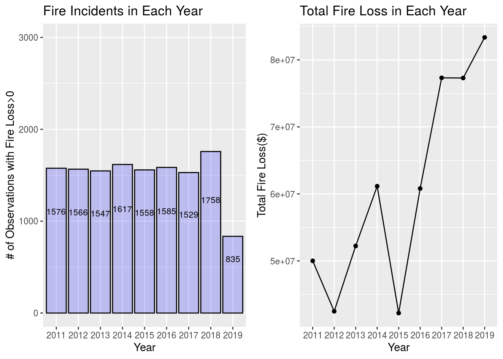
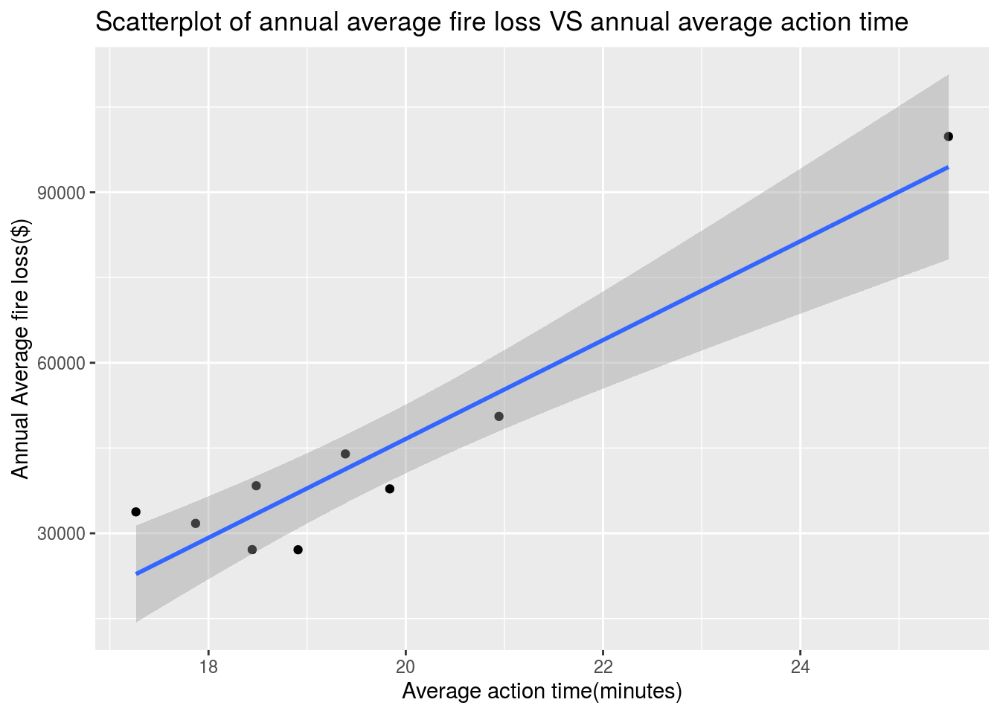
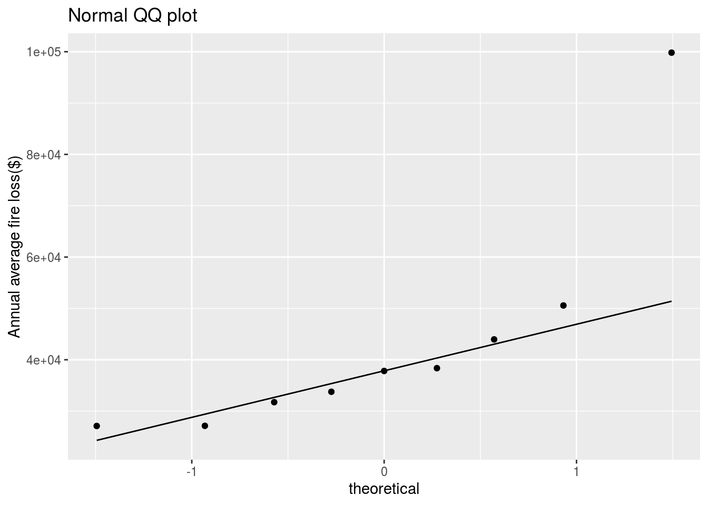

Abstract:
Estimation of fire loss can be laborious.In this paper, we explore the Fire Incidents dataset, which contains various information about fire incidents recorded by Fire Services Toronto from 2011 to 2019. We find that there exists a linear relationship between the annual average fire loss and annual average action time. Our finding has implications for claim budgeting and building risk models at insurance companies.
I. Introduction
To come up with an accurate estimate of fire loss has been challenging for many insurance companies. According to he U.S. Fire Administration (USFA), “Fire loss is an estimation of the total loss to the structure and contents in terms of replacement in like kind and quantity”. However, since many of the factors can’t be quantified at scene, specialists at insurance companies are provided with guidelines rather than fixed formulas.
In this report, the objective is to explore the feasibility of using annual average action time to predict annual average fire loss based on a simply linear regression model.
II. Data Source Discussion
The source of the data is from a dataset listed on the City of Toronto’s Open Data Portal. The dataset is published by Fire Services Toronto and refreshed annually. It provides fire incidents information similar to what is reported to Ontario Fire Marshal. Also, the dataset used for the following analysis was last updated on September 21, 2020, which is 3 days before this analysis. Therefore, although original data gathering method is not provided, this dataset can be assumed quite reliable.
For the purpose of this study, 3 features from the original dataset are extracted, and they are “Estimated_Dollar_Loss”,“TFS_Alarm_Time” and “Fire_Under_Control_Time”. “Estimated_Dollar_Loss” is the estimated fire loss provided by specialists, “TFS_Alarm_Time” is the timestamp of when Toronto Fire Services was notified of the incident, and “Fire_Under_Control_Time” is the timestamp when fire is under control.
In the following analysis, “fire loss (in $)” is used to represent “Estimated_Dollar_Loss”, and it is our response variable or variable of interest. “Action time (in minutes)” is measured as the difference in time between “Fire_Under_Control_Time” and “TFS_Alarm_Time”, and it is our explanatory variable or independent variable.
III. Exploratory Data Analysis
As per the dataset last updated on September 21,2020, there are total of 17,536 observations of fire incidents recorded. After removing missing values, there are 13,571 observations of fire incidents with fire loss greater than 0 dollar available for analysis. Based on the plot below, approximately 1550 fire incidents in each year between 2011 to 2018. However, only 835 fire incidents are available in 2019. Quite few observations in 2019 are filtered out during data cleansing stage because their estimate fire loss are missing. We can assume that Fire Service Toronto is still in the process of gathering those information as it usually takes long time to calculate the fire loss. Based on the plots below, although number of fire incidents with fire loss great than 0 is approximately uniform from 2011 to 2019, it seems that the total fire loss in each year is increasing.

Below is a table showing numerical summary of the fire loss($) in each year. over the years, it seems that most of fire incidents had a fire loss between 500 dollars to 25000 dollars.
Some extreme large values occurred in 2011, 2017, and 2019. Those are the data points worth investigation and confirmation before inferences. Extreme values had larger influence on the mean and standard deviation of fire loss in 2019 because sample size in 2019 is relatively smaller than that from other years.
## # A tibble: 9 x 7
## year minimum Quantile1 mean standard.deviation Quantile3 maximum
## <chr> <int> <dbl> <dbl> <dbl> <dbl> <int>
## 1 2011 1 500 31735. 340134. 12000 13000000
## 2 2012 1 500 27128. 145452. 15000 5000000
## 3 2013 1 1000 33764. 123415. 15000 2000000
## 4 2014 1 1000 37814. 205447. 20000 6000000
## 5 2015 1 1000 27101. 91017. 20000 2000000
## 6 2016 1 1000 38362. 202971. 20000 5000000
## 7 2017 1 1000 50570. 416819. 20000 10000000
## 8 2018 1 1000 43966. 192097. 20000 5000000
## 9 2019 1 1000 99819. 1734919. 25000 50000000Below is a table showing numerical summary of the action time(minutes) in each year. over the years, it seems that most of fire incidents had a action time between 7 minutes to 20 minutes. That means as soon as fire alarm was triggered in Toronto, most of time the fire was extinguished within 20 minutes. Again, it seems that the extreme values in 2019 drove mean and standard deviation unusually high in that year.
## # A tibble: 9 x 7
## year minimum Quantile1 mean standard.deviation Quantile3 maximum
## <chr> <dbl> <dbl> <dbl> <dbl> <dbl> <dbl>
## 1 2011 1.37 7.55 17.9 23.6 17.9 342.
## 2 2012 0.317 7.1 18.4 53.6 16.6 1788.
## 3 2013 0.417 7.21 17.3 23.7 17.9 355.
## 4 2014 2.88 7.58 19.8 52.6 17.4 1319.
## 5 2015 1.65 8.07 18.9 28.3 18.8 391
## 6 2016 1.45 7.93 18.5 47.4 18.2 1659.
## 7 2017 0.883 8.3 20.9 66.7 18.8 2015.
## 8 2018 1.88 8.62 19.4 29.5 19.9 783.
## 9 2019 2.3 8.48 25.5 95.3 19.6 1856.A scatterplot of annual average fire loss versus annual average action time is shown below. It appears that there is linear association between the two variables.

One of the assumption to check before using simply linear regression model is normality of response variable. In this case, we want to use normal qq plot to check the normality of annual average fire loss. By inspection, most of points are close to the straight line. Although there is one point that is far from straight line, it is acceptable because this unusual mean is the result of extreme values in small sample in 2019. Therefore, we can assume that annual average fire loss follows a normal distribution so does the error term in simple linear regression model.

IV. Model and Discussion
slr <- lm(yearly_data$estimate_loss~yearly_data$action.time) #fit a linear model between
summary(slr)##
## Call:
## lm(formula = yearly_data$estimate_loss ~ yearly_data$action.time)
##
## Residuals:
## Min 1Q Median 3Q Max
## -10010 -5939 2684 4936 10947
##
## Coefficients:
## Estimate Std. Error t value Pr(>|t|)
## (Intercept) -127319 21550 -5.908 0.000595 ***
## yearly_data$action.time 8696 1090 7.975 9.3e-05 ***
## ---
## Signif. codes: 0 '***' 0.001 '**' 0.01 '*' 0.05 '.' 0.1 ' ' 1
##
## Residual standard error: 7575 on 7 degrees of freedom
## Multiple R-squared: 0.9008, Adjusted R-squared: 0.8867
## F-statistic: 63.6 on 1 and 7 DF, p-value: 9.299e-05Based on the summary above, we can get a best fitted line \(\hat y= -127319 + 8696x\). It suggests that for every 1 minutes increase in the annual average action time, the expectation of annual average fire loss will increase 8,696 dollars. Considering the significant test with 5% significance level for the slope parameter, the p-value is 9.3e-05 for 2 sided hypothesis test(Ho:B1=0). Since p-value is much smaller than 5%, we have strong evidence to reject Ho. So we can conclude that there exists linear association between annual average fire loss and annual average action time.
V. Weaknesses and Next Steps
One of the limitation of this analysis is that the lurking variables are not considered. For example, height of place where the fire incidence occur also have impact on the fire loss. Fire at higher floor may require longer rescue setup, leading to longer action time and more damage. Another weakness of this analysis is the uneven sample size in different years. As mentioned above, since year of 2019 record had many missing values of fire loss, the extreme values then drove a unusual mean in the smaller sample. In Conclusion, we should investigate and confirm the extreme values of fire loss and action time, gets more observations in 2019, and considering lurking variables in the next analysis.
VI. Code
All codes are available at https://github.com/JunXing2633/website.
VII. Reference
- Fire Services Toronto (2020).Fire Incidents.R package version 0.1.3 Retrieved 2020-9-24 from
https://open.toronto.ca/dataset/fire-incidents/ - U.S. Fire Administration (2020).NFIRSGram: calculating fire loss. Retrieved 2020-9-24 from https://www.usfa.fema.gov/data/nfirs/support/nfirsgrams/nfirsgram_calculating_fireloss.html
- S.Mailvaganam, D.Yung and M.Prencipe (1992) Ontario Fire Loss Statistics for the Risk-Cost Assessment Model. Retrieved 2020-9-20 from http://www.cfaa.ca/Files/flash/EDUC/FIRE%20ALARM%20ARTICLES%20AND%20RESEARCH/ontario%20fire%20loss%20stats%20ir622.pdf